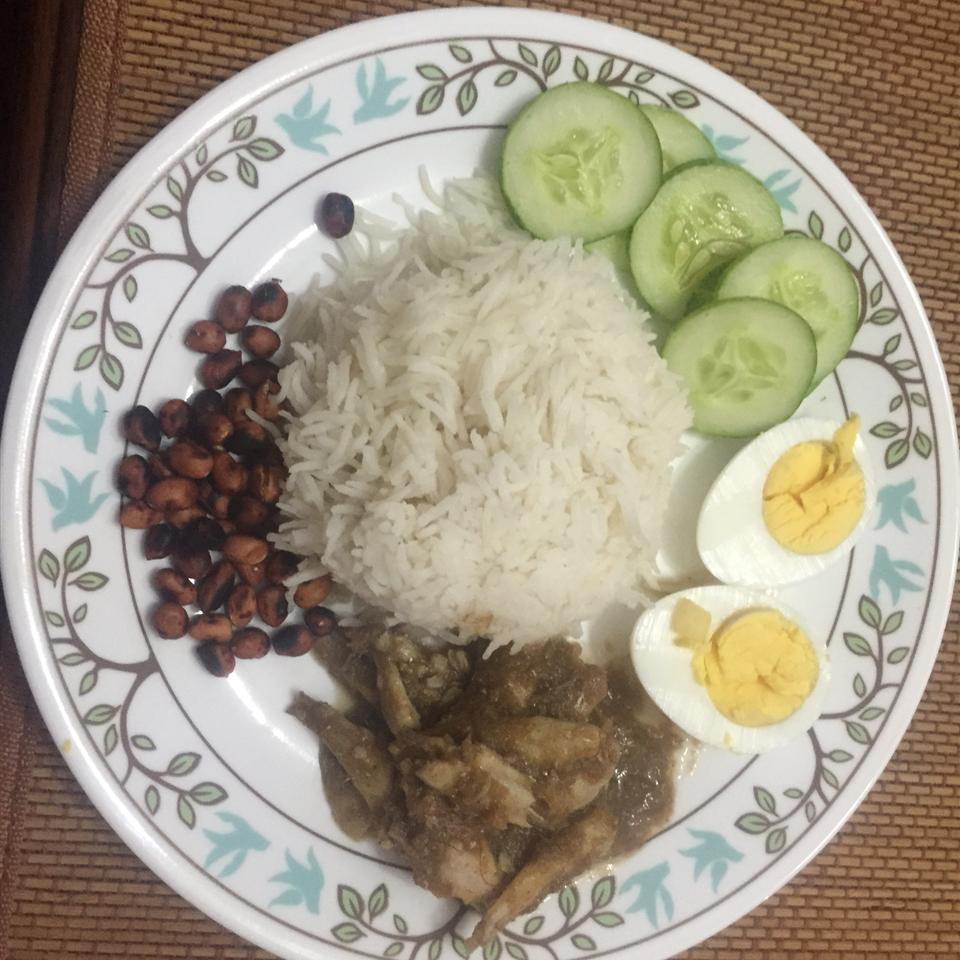

Malaysian Nasi Lemak

Description
Delicious Malaysian coconut rice, served with sambal (anchovy hot chile sauce), fried anchovies, fried peanut, sliced cucumber or tomato and hard-boiled egg. If you do not have tamarind juice, substitute with same amount of lemon juice.
Ingredients
- For the rice:
- 2 cups coconut milk
- 2 cups water
- 1/4 teaspoon ground ginger
- 1 (1/2 inch) piece fresh ginger, peeled and thinly sliced salt to taste
- 1 whole bay leaf
- 2 cups long grain rice, rinsed and drained
- For the garnish:
- 4 eggs
- 1 cucumber
- 1 cup oil for frying
- 1 cup raw peanuts
- 1 (4 ounce) package white anchovies, washed
- For the sambal:
- 2 tablespoons vegetable oil
- 1 medium onion, sliced
- 3 cloves garlic, thinly sliced
- 3 shallots, thinly sliced
- 2 teaspoons chile paste
- 1 (4 ounce) package white anchovies, washed, salt to taste
- 3 tablespoons white sugar
- 1/4 tamarind juice
Directions
- In a medium saucepan over medium heat, stir together coconut milk, water, ground ginger, ginger root, salt, bay leaf, and rice. Cover, and bring to a boil. Reduce heat, and simmer for 20 to 30 minutes, or until done.
- Place eggs in a saucepan, and cover with cold water. Bring water to a boil, and immediately remove from heat. Cover, and let eggs stand in hot water for 10 to 12 minutes. Remove eggs from hot water, cool, peel and slice in half. Slice cucumber.
- Meanwhile, in a large skillet or wok, heat 1 cup vegetable oil over medium-high heat. Stir in peanuts and cook briefly, until lightly browned. Remove peanuts with a slotted spoon and place on paper towels to soak up excess grease. Return skillet to stove. Stir in the contents of one package anchovies; cook briefly, turning, until crisp. Remove with a slotted spoon and place on paper towels. Discard oil. Wipe out skillet.
- Heat 2 tablespoons oil in the skillet. Stir in the onion, garlic, and shallots; cook until fragrant, about 1 or 2 minutes. Mix in the chile paste, and cook for 10 minutes, stirring occasionally. If the chile paste is too dry, add a small amount of water. Stir in remaining anchovies; cook for 5 minutes. Stir in salt, sugar, and tamarind juice; simmer until sauce is thick, about 5 minutes.
- Serve the onion and garlic sauce over the warm rice, and top with peanuts, fried anchovies, cucumbers, and eggs.